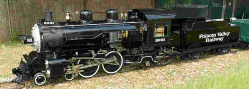

Last updated: 9 September, 2025
| Builder: | Alan Shelly (Sacramento) |
| Build #: | |
| Date: | 1949 |
| Engine #: | 3001 |
| Railroad: | Folsom Valley Railway |
| Website: | Facebook folsomzoofriends.org www.folsom.ca.us |
| Email: | emailaddress |
| Location 1: | Folsom City Lions Park, Zoo and Folsom Valley Railway, 403 Stafford Street Folsom, CA 95630 Zoo |
| GPS: | 38.682043, -121.165650 Depot. |
| Phone: | 916-202-0997 1 |
| Status: | Operational |
| Notes: | The 3001 is a black heavy Atlantic oil firer locomotive. It is a duplicate of its older brother, a green Atlantic 3025 built in 1938. |
All aboard! The Folsom Valley Railway operates a miniature scale live steam train on a track that circles through Folsom City Lions Park. The open car round-trip ride lasts approximately 10 minutes. 3
Ride Tickets: $5/person. See Facebook for hours of operation. 3
| Class: | |
| Gauge: | 12" |
| F.M.Whyte: | 4-4-2 (Atlantic) |
| Drivers: | 16 |
| Gear Ratio: | |
| Tractive Effort: | |
| Weight: | 4,000 |
| Weight on Drivers: | |
| Length: | 16 |
| Boiler: | |
| Cylinders: | |
| Top Speed: | |
| Horsepower: | |
| Fuel: | |
| Fuel Type: | Oil |
| Water: | |
| Steam psi: |